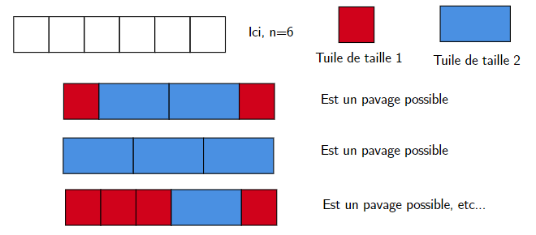
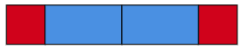

Récursivité
Pré-requis
Vous avez déjà assimilé la récursivité sur les structures de données standard.
Rappel de définitions
Fonction récursive
Une fonction récursive est une fonction qui fait appel à elle-même dans sa définition.
Type récursif
Un type récursif est un type qui fait appel à lui-même dans sa définition.
Cas de base
Un cas de base est un cas exhibé dont le traitement ne nécessite pas d'appel récursif pour renvoyer un résultat.
L'objectif dans la construction d'une fonction récursive est d'assurer la convergence vers un cas de base pour les cas récursifs. Ceci afin que la fonction s'arrête.
Disjonction de cas
Lors de l'analyse d'un problème, il convient d'exhiber chacun des cas qui peuvent se produire sans en oublier parmis les possibles.
Tests
Par tester, on entendra écrire la docstring appropriée et inclure en fin de fichier le boilerplate de doctest.
Note d'intention
La récursivité est abordée à travers la programmation dynamique et l'implémentation des structures de données de base:
- piles
- listes
- arbres
Les exercices qui suivent portent sur la récursivité sur les entiers, et sont destinés aux personnes qui ont et veulent avoir un bon bagage mathématique. Ce ne sont globalement pas des exercices faciles, c'est tout l'intérêt.
Récursivité sur les entiers - Triangle de Pascal
Observez la façon dont est construit le tableau suivant. On appelle i l'indice ligne, et j l'indice colonne. Le tableau a 6 lignes sur l'exemple, mais on le considère de taille infinie.
Il n'y a que des \(1\) dans la première colonne ainsi que sur la diagonale. Il n'y a que des \(0\) au dessus de la diagonale. Sinon, un nombre est toujours égal à celui du dessus, plus celui du dessus à gauche.
On cherche à définir une fonction \(C(i,j)\) qui renvoie le nombre à la coordonnée \(\binom{i}{j}\)
- Que doit renvoyer l'appel \(C(4,2)\)?
- disjonction de cas:
- Quelle est la condition sur \(i\) et \(j\) pour que \(C(i, j)\) renvoie 0?
- Quelle est la condition sur \(i\) et \(j\) pour que \(C(i, j)\) renvoie 1?
- Sinon, exprimez \(C(i,j)\) de manière récursive.
- Ecrivez et testez la fonction récursive
C(i: int, j: int) -> intqui renvoie le nombre à la coordonnée \(\binom{i}{j}\). - Ecrivez la fonction
pascal(n: int) -> list[list[int]]qui renvoie le tableau à \(n+1\) lignes. Par exemple, le tableau exemple est renvoyé parpascal(5). La fonction doit faire une ligne. Vous utiliserez les listes en compréhension.
On s'intéresse maintenant à la suite du produit \(P_n\) de chacun des termes non nuls de la ligne \(n\). Par exemple, \(P_0 = 1\), \(P_4 = 1\times 4 \times 6 \times 4 \times 1\)
- En utilisant la fonction C, écrire et tester la fonction
P(n: int) -> int
On considère maintenant la suite \(\displaystyle Q_n = \frac{P_{n-1}P_{n+1}}{P_n^2}, n>0\)
-
Ecrire la fonction
Q(n: int) -> float -
En jouant avec cette fonction, conjecturer sur \(\displaystyle \lim_{n \to \infin}Q_n\)
-
Montrez que \(\displaystyle \frac{P_{n+1}}{P_n} = \prod_{k=0}^{n} \frac{n+1}{n+1-k}\) sachant que:
- \(\displaystyle P_n = \prod_{k=0}^{n} \binom{n}{k}\)
- \(\displaystyle \binom{n}{k} = \frac{n!}{k!(n-k)!}\) (C'est bien de savoir le montrer par récurrence)
-
En déduire que \(\displaystyle \frac{P_{n+1}}{P_n} = \frac{(n+1)^n}{n!}\)
-
Vous avez fait le plus dur. Démontrez votre conjecture en conséquence. Il faudra se ramener à une limite éminemment célèbre.
Interprétation
- \(\displaystyle \frac{P_{n+1}}{P_n}\) mesure les rapports successifs de \(P_n\), elle est donc une mesure "d'évolution".
- \(Q_n\) mesure les rapports successifs de \(\displaystyle \frac{P_{n+1}}{P_n}\) , elle mesure donc l'évolution de la mesure d'évolution de \(P_n\).
Récursivité sur les entiers - Opérations
La récursivité vous a été présentée via des structures de données elles-mêmes récursives. Ici nous allons nous concentrer sur les entiers naturels.
L'objectif est de construire toutes les opérations que vous connaissez, simplement à partir de la définition du successeur d'un nombre.
- On dispose d'un type
entiernatreprésentant un entier naturel (qu'on modélise par un int). - On dispose d'une fonction
succ. Elle sert à renvoyer le successeur de l'entier en paramètre. - On définit ZERO.
- On définit UN comme successeur de 0.
- On dispose d'une fonction
afficherqui affiche la représentation de l'entier à l'écran.
type entiernat = int
def succ(n: entiernat) -> entiernat:
assert n>0, "Pas un entier naturel"
return n + 1
ZERO = 0
UN = succ(ZERO)
def afficher(n: entiernat):
print(n)
A partir de maintenant, plus aucun opérateur ne sera utilisé. (+, -, , /, *, ....)
On donne la fonction pred construite uniquement avec la fonction succ. Cette fonction renvoie le prédécesseur d'un entier.
def pred(n: entiernat):
assert n!=ZERO, "Aucun entier naturel n'a pour successeur 0"
def aux(n: entiernat, acc: entiernat) -> entiernat:
if succ(acc) == n:
return acc
else:
return aux(n, succ(acc))
return aux(n, ZERO)
Exemple complet avec l'opération plus
On veut calculer \(plus(a, b)\) de manière récursive, en utilisant les fonctions déjà existantes. \(plus(a, 0) = a\), ça sera notre cas de base. On veut donc réécrire \(plus(a, b)\) pour que \(b-1\) aparaisse, assurant la convergence vers le cas de base. On doit donc réécrire \(a+b\) afin de faire apparaître \(b-1\).
donc \(plus(a,b)=succ(plus(a, pred(b)))\)
Ecrivons donc notre fonction en conséquence:
En écrivant bêtement la définition en python:
def plus(a: entiernat, b: entiernat) -> entiernat:
if b == ZERO:
return a
else:
return succ(plus(a, pred(b)))
afficher(plus(9, 5))
Autres opérations
En suivant ce mode opératoire, écrire les fonctions fois et puissance
Pour aller plus loin
Vous pouvez, si vous le souhaitez, vous intéresser aux puissances itérées d'ordre \(n\) et écrire un programme récursif qui les calcule. Pour aller encore plus loin, vous pouvez étudier la notion d'hyperopérateur et écrire la fonction d'hyperopération (celle qui les unit toutes).
Construction de \(\mathbb{N}\) par Von Neumann
Voici comment Von Neumann construit \(\mathbb{N}\)
- Un entier naturel est un ensemble.
- Le premier entier naturel est l'ensemble vide. On l'appelle zéro.
- Le successeur d'un entier naturel est l'union de cet entier avec l'ensemble contenant cet entier.
Par conséquent, Le cardinal de l'entier n est précisément n.
type entiernat = set # Un entier naturel est un ensemble
def succ(n: entiernat) -> entiernat:
return n.union(set(n)) # L'union de cet entier avec l'ensemble contenant cet entier
ZERO = set() # Zero est l'ensemble vide
UN = succ(ZERO)
def afficher(n: entiernat):
"""Le cardinal de n est précisément n"""
print(len(n))
Vous pouvez remplacer la définition précédente par cette définition, et constater que vos fonctions donnent toujours des résultats corrects.
Pavages
Problème 1
On cherche à paver une bande composée de n carrés avec des tuiles de largeur 1 et 2.

- Dessiner les pavages possibles pour \(n=1\), \(n=2\), \(n=3\), \(n=4\)
- Pour quelles tailles de bande pouvez vous donner directement la réponse sans trafiquer?
- Trouvez l'équation de récurrence de \(p_{n}\), le nombre de pavage d'une bande de taille \(n\)
- Ecrivez une fonction en python
nombre_pavages(n: int) → intqui calcule le nombre de pavages pour une bande de taille n.
Variation
Reprendre ce problème pour paver une bande de taille \(n\) avec des tuiles de largeur 1 et 3.
Problème 2
Reprendre le problème 1, mais cette fois, nous cherchons à construire la liste des possibilités de pavages.

Ce pavage correspond à la liste ['R', 'B', 'B', 'R'] pour n=6.
- Ecrire
pavage(n: int) -> list[str]
Ici, il faut s'appuyer sur la structure qui détermine le nombre de solutions (comme presque tout le temps en réalité). Vous pouvez ensuite dessiner les bandes à l'écran, en s'intéressant à ces deux str:
rouge = "\N{LARGE RED SQUARE}"
bleu = 2*"\N{LARGE BLUE SQUARE}"
Permutations des n premiers entiers naturels
TODO
Le tour du cavalier
EN COURS
Le tour du cavalier est un problème hyper classique consistant à déplacer un cavalier sur un échiquier de manière à ce qu’il visite chaque case exactement une fois.
Il existe deux types de tours:
- Tour fermé : Le cavalier revient à sa case de départ après avoir visité chaque case une fois, formant ainsi un circuit fermé.
- Tour ouvert : Le cavalier termine son parcours sur une case différente de celle de départ sans revenir à sa position initiale.
Sur un échiquier 5x5
- Quand le cavalier part d'une case blanche, peut-il aller sur une case de la même couleur?
- Combien de mouvements doit faire le cavalier pour parcourir toutes les cases?
- Expliquer, de manière structurée, en vous servant des réponses aux questions précédentes, pourquoi il est impossible qu'un cavalier revienne à son point de départ en ayant visité toutes les cases sur un échiquier 5x5.
Tour ouvert
On donne les types suivants, ainsi que les variables globales LARGEUR et HAUTEUR (de l'échiquier)
type coup = tuple[int, int]
type chemin = list[coup]
HAUTEUR = 5
LARGEUR = 5
Coups suivants
Ecrire la fonction coups_suivants(c: coup) -> list[coup]
Cette fonction renvoie la liste des coups possibles lorsqu'on a joué le coup c.
Parcours de tous les tours possibles (ouverts ou fermés)
Ecrire la fonction récursive parcours(c: coup, chemins: list[chemin], acc: chemin)
- acc contient le chemin en cours de construction
- chemins contient la liste de tous les chemins. Une liste est mutable, donc elle peut être modifiée à n'importe quel moment. (on se la trimballe partout où on va)
- à chaque appel, il faut visiter tous les coups qui ne sont pas déjà dans le chemin, en l'ajoutant bien sûr dans le chemin.
- dès qu'on a un chemin dont la taille est égale au nombre de cases, il faut l'ajouter aux chemins.
Tours fermés
- Dans une autre fonction au nom approprié, modifier le cas de base pour n'afficher que les tours fermés.
- Ca ne doit rien renvoyer sur un échiquier 5x5, comme constaté précédemment
- On ne testera que sur un échiquier de taille 6x5 (c'est très long)
God Mode
Ceux qui se sont frottés à rust peuvent constater la différence de performance sur ce genre de problèmes. Dans cargo.toml, pour que le code généré soit optimisé, ajouter:
[profile.release]
opt-level = 3
lto = true
On utilisera le flag --release pour build ou run. Par exemple:
cargo run --release